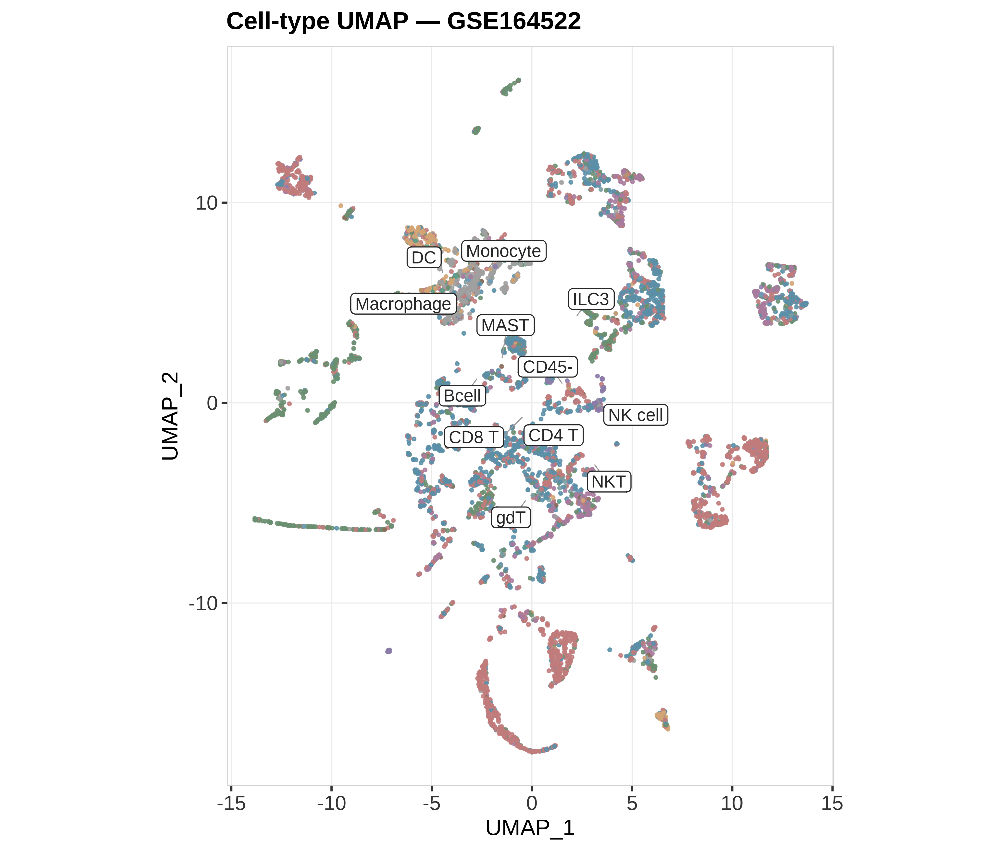
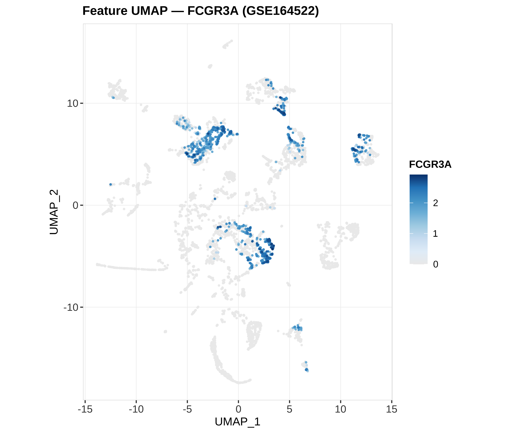
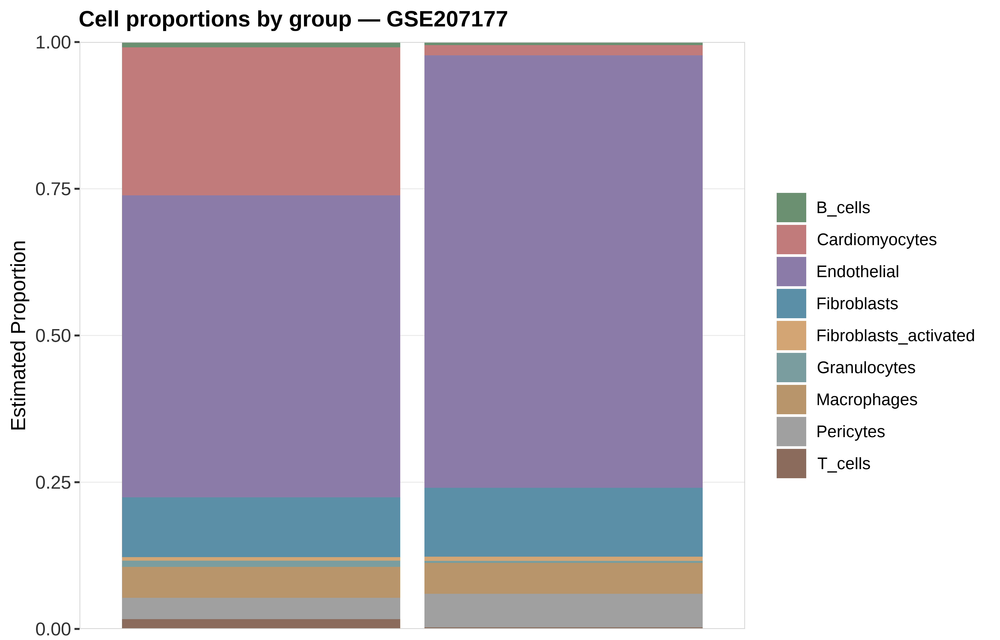

状态：PASS
已 source 本技能 脚本_scripts/: 运行单细胞空转骨架_runScrnaSkeleton.R | UMAP via cache (GSE164522); proportions via cache (GSE207177)
data_provenance: REAL
GSE164522（山水 GSE164522_seurat_umap_subsample.rds → 缓存 CSV）GSE207177（书清 细胞类型比例.csv）详见 数据文件/DATA_SOURCE.md / PROVENANCE.md。
"skill","stage","n_rows","n_cols","n_samples","group_source","toy","data_provenance","accession","sourced_skill_scripts","notes","checked_at" "scRNA-Spatial","post",7228,9,7228,"GSE164522 Seurat UMAP subsample + GSE207177 proportions",FALSE,"REAL",NA,"已 source 本技能 脚本_scripts/: 运行单细胞空转骨架_runScrnaSkeleton.R | UMAP via cache (GSE164522); proportions via cache (GSE207177)","celltype UMAP + FCGR3A feature UMAP + stacked proportions; data_provenance=REAL","2026-07-19 20:11:12"



REAL：GSE164522 Seurat UMAP 子样（细胞类型 + FCGR3A feature）；堆叠比例优先 GSE207177 书清细胞类型比例表。data_provenance=REAL。
生成时间：2026-07-19 20:11:15 · 报告规范：统一交付规范_DeliveryStandards · 版本 v1